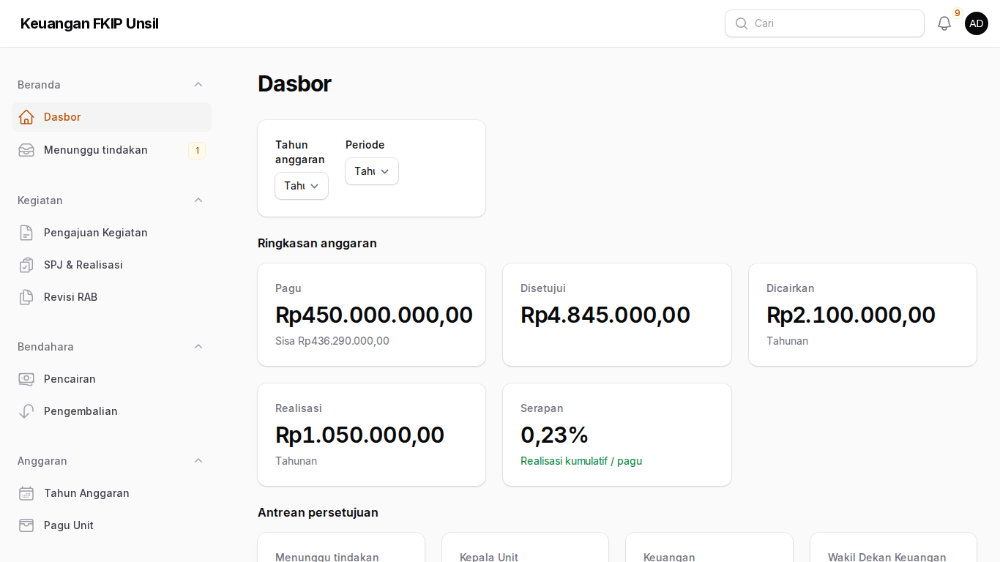
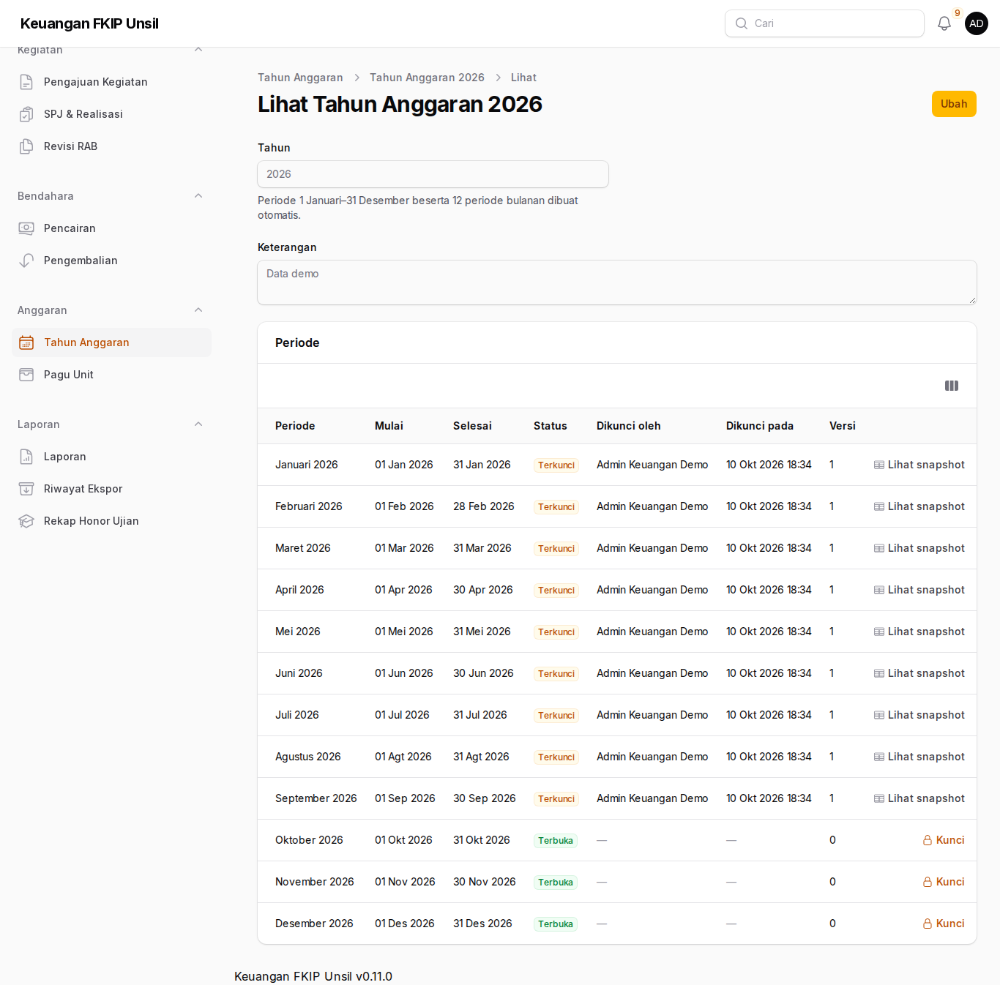
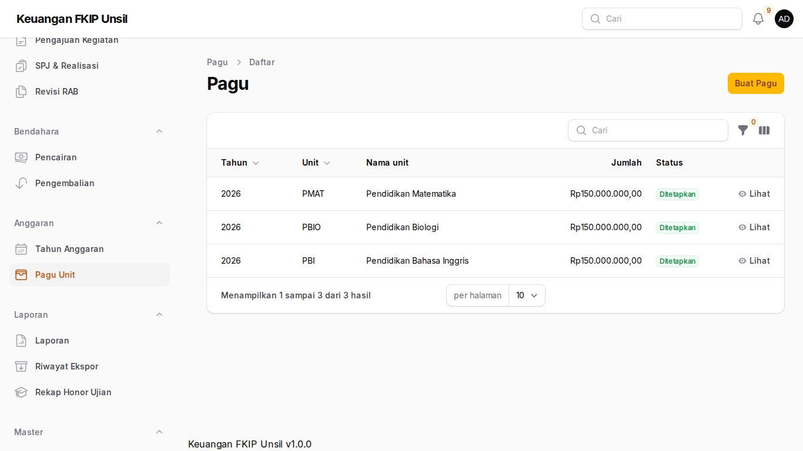
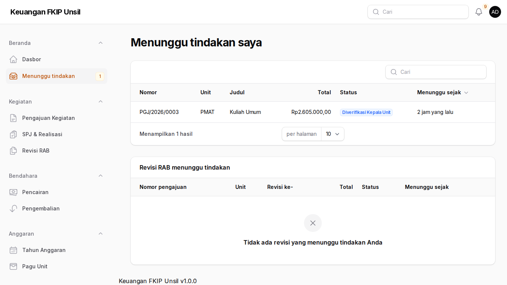
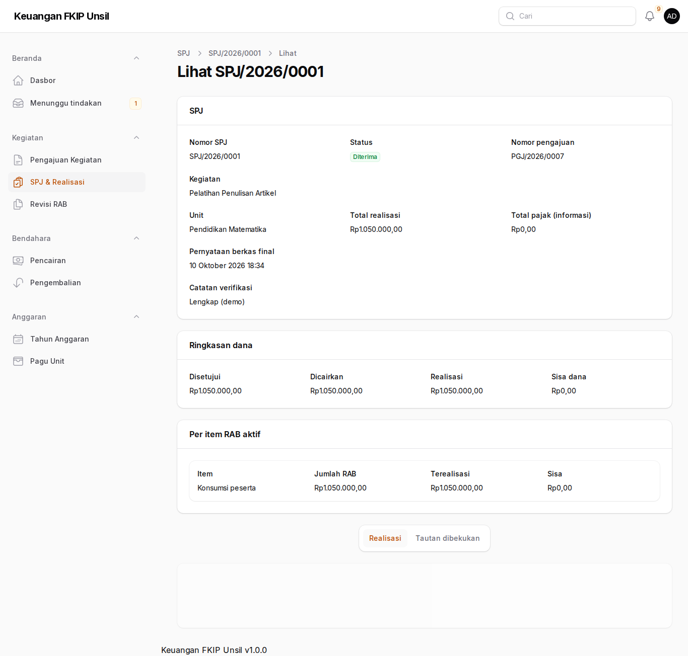
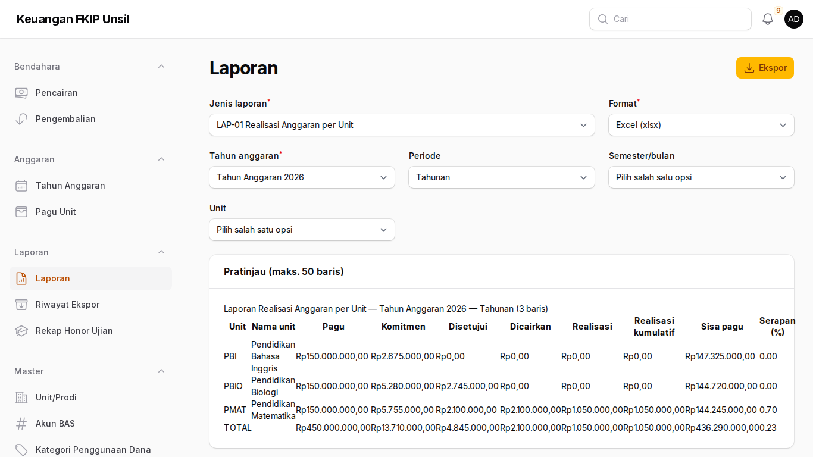
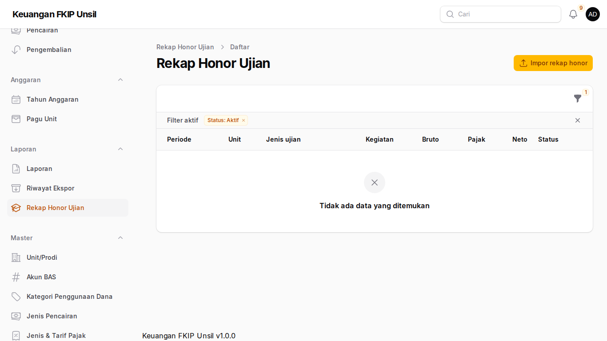
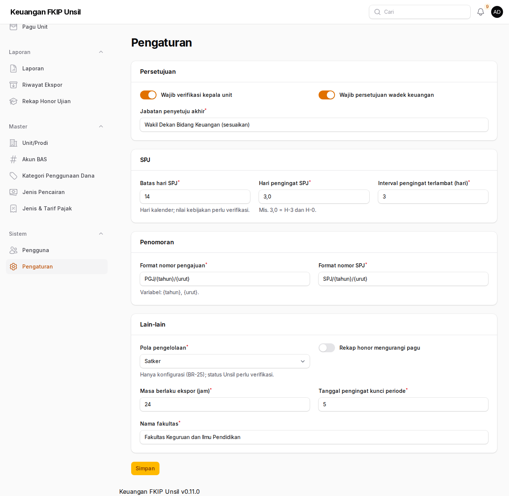
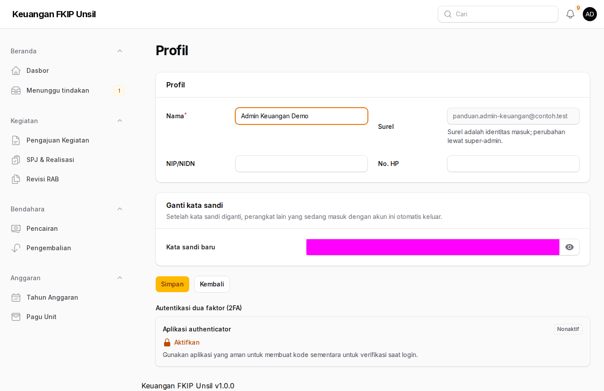

Panduan Admin Keuangan Fakultas
Peran: admin-keuangan
Tujuan peran
Menyiapkan tahun anggaran dan pagu, memverifikasi pengajuan (tahap keuangan), SPJ, dan pengembalian, mengunci periode, serta menyusun laporan.
Cara masuk
- Buka halaman masuk aplikasi (alamat https://supportfkip.unsil.ac.id/keuangan/panel).
- Isi Alamat email dan Kata sandi akun Anda, lalu klik Masuk.
- Verifikasi dua langkah (autentikator) bersifat sukarela; Anda dapat mengaktifkannya dari halaman Profil. Bila diaktifkan, simpan kode pemulihan di tempat aman.
Langkah-langkah
Dasbor fakultas
Beranda → Dasbor menampilkan ringkasan seluruh unit. Gunakan filter tahun dan periode di bagian atas.

Dasbor fakultas Tahun anggaran & kunci periode
Anggaran → Tahun Anggaran → buka tahun. Bagian Periode berisi 12 bulan. Klik Kunci pada bulan tertua yang masih terbuka, baca peringatan pra-cek, lalu konfirmasi; snapshot angka tersedia di Lihat snapshot.

Tahun anggaran & kunci periode Pagu unit
Anggaran → Pagu Unit → Buat: unit, tahun, jumlah, dan rincian per akun (opsional). Pagu menunggu penetapan Wakil Dekan.

Pagu unit Verifikasi pengajuan
Beranda → Menunggu tindakan: buka pengajuan berstatus Diverifikasi Kepala Unit → Verifikasi, Kembalikan, atau Tolak.

Verifikasi pengajuan Verifikasi SPJ
Kegiatan → SPJ & Realisasi: periksa realisasi dan bukti; lencana “Kemungkinan bukti ganda” menandai berkas Drive yang sama di pengajuan lain. Klik Terima (tautan dibekukan) atau Kembalikan.

Verifikasi SPJ Laporan & ekspor
Laporan → Laporan: pilih LAP-01 s.d. LAP-09, pratinjau, lalu unduh. Laporan besar diproses di antrean; tautan unduh muncul di notifikasi dan Riwayat Ekspor (berlaku ≤ 24 jam).

Laporan & ekspor Rekap honor ujian
Laporan → Rekap Honor Ujian → Impor rekap honor: unggah berkas Excel ekspor fkipapp. Honor tidak dihitung di aplikasi ini; batch yang salah dapat dibatalkan sebelum periodenya dikunci.

Rekap honor ujian Pengaturan
Sistem → Pengaturan: batas hari SPJ, jenjang persetujuan, dan parameter lain. Nilai berlabel “perlu verifikasi” harus dikonfirmasi bagian keuangan.

Pengaturan
Menyimpan bukti di Google Drive
Aplikasi tidak menerima unggahan berkas. Simpan bukti di Google Drive, lalu tempel tautannya.
- Simpan berkas di Shared Drive unit/fakultas (bukan Drive pribadi) agar tidak hilang saat pegawai pindah.
- Klik kanan berkas → Bagikan → Akses umum → pilih Terbatas atau Universitas Siliwangi. Jangan pilih “Siapa saja yang memiliki link” untuk kuitansi, nota, faktur, bukti transfer, dan bukti setor.
- Klik Salin link, tempel di isian Tautan (URL), dan untuk bukti keuangan centang konfirmasi akses terbatas.
- Dari ponsel: foto nota → simpan ke folder Shared Drive unit → ketuk ⋮ → Bagikan → Setelan akses → Terbatas/Universitas Siliwangi → ketuk ⋮ → Salin link → tempel di aplikasi melalui peramban ponsel.
Tautan ditolak bila memakai http://, pemendek (bit.ly, s.id), tautan folder Drive, atau domain di luar daftar (mis. dropbox.com).
Profil dan kata sandi
Buka menu pengguna di pojok kanan atas, lalu pilih Profil. Di sana Anda dapat mengubah nama, NIP, dan nomor HP, serta mengganti kata sandi (masukkan kata sandi sekarang, lalu kata sandi baru dua kali).

- Setelah kata sandi diganti, perangkat lain yang sedang masuk dengan akun Anda otomatis keluar.
- Bila administrator menandai akun Anda wajib ganti kata sandi, Anda hanya dapat membuka halaman Profil sampai kata sandi diganti.
- Surel adalah identitas masuk dan hanya dapat diubah oleh administrator.
Tanya-jawab
- Tombol Verifikasi tidak muncul?
- Anda pembuat pengajuan atau sudah bertindak di tahap lain (pemisahan tugas).
- Pesan “Sedang diproses, coba lagi.”
- Aksi yang sama sedang berjalan di tab atau oleh pengguna lain.
Kontak
Admin Keuangan FKIP (keuangan-fkip@unsil.ac.id) · Admin TI Fakultas untuk akun & MFA.